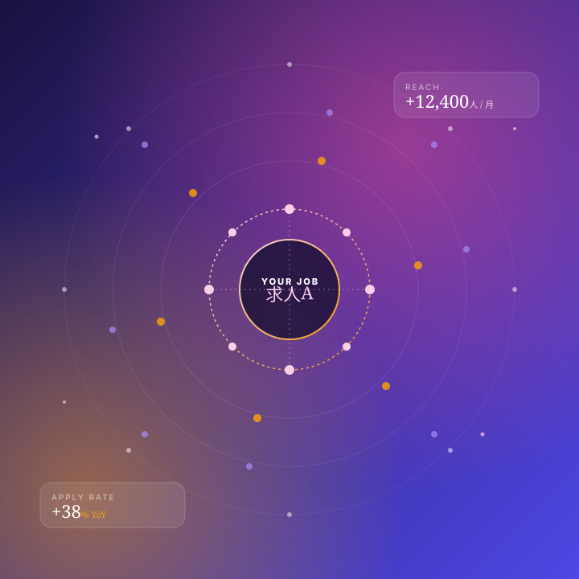
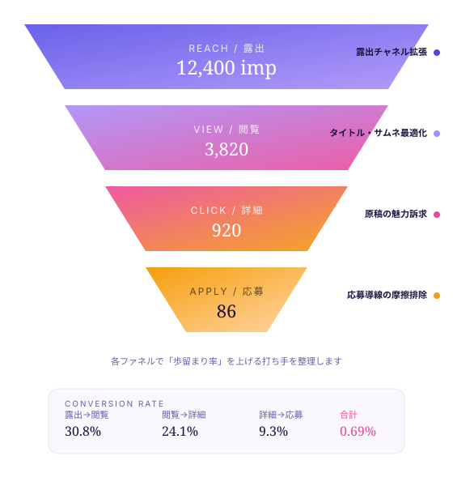
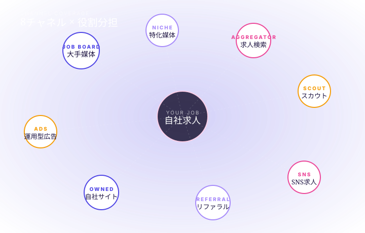

求人を出しているのに、そもそも見られていない気がする
原因: 露出チャネルが少ない、検索順位が上がらない、サムネイル/タイトルが弱い。
「求人を出しても応募が来ない」のは、見られていないからか、選ばれていないか、その両方か。
aggregateは、露出 → 閲覧 → 詳細 → 応募のファネルを分解し、止まっている場所を特定。
8つのチャネルを役割分担させて、母集団そのものを設計し直します。

求職者は1つの媒体だけで完結しません。検索・スカウト・SNS・自社サイトを行き来する動線に対して、それぞれの役割で求人を露出する設計が必要です。
母集団形成が進まないとき、原因はだいたい4つに分類できます。
どこで止まっているかが分かれば、打ち手は変わります。
求人を出しているのに、そもそも見られていない気がする
原因: 露出チャネルが少ない、検索順位が上がらない、サムネイル/タイトルが弱い。
クリックはされているのに、応募までいかない
原因: 原稿の魅力訴求が弱い、写真・動画が情報量不足、応募導線に摩擦がある。
特定の媒体だけに依存していて、他のチャネルが空白
原因: 露出チャネルがJob Board一極集中。求職者の検索行動と一致していない。
同じ職種でも、競合の方が応募が集まっているように見える
原因: 待遇・写真・働き方訴求の比較で負けている。差別化軸が立っていない。
出稿数を増やしても応募の伸びが鈍い
原因: 量を増やす前に、ファネル中間（閲覧→詳細）の歩留まり改善が必要なケース。
そもそも求職者がどこを見ているのか分からない
原因: 求職者の検索チャネル分布の把握が不足。露出戦略が「経験則」に依存している。
露出から応募までのファネルを4段階に分け、どこで歩留まりが落ちているかを特定。落ちている階層に応じて、打ち手を切り替えます。

求職者が「そもそも見つけられる」状態を作る。検索結果での順位、複数チャネルへの掲載、SNS拡散の組み合わせで設計します。
タイトル・サムネ・冒頭3行で「自分向け」と思ってもらう。検索結果から閲覧への歩留まりを上げる原稿改善が中心です。
仕事内容・働き方・待遇のうち、求職者が「決め手」にしている情報を上位に配置。離脱が起きるブロックを特定します。
応募導線の摩擦排除、応募フォームの項目最適化、CTAの位置改善。応募率改善は最後の数%を取りに行く工程です。
母集団形成は「量」「質」「歩留まり」の3点を同時に動かす必要があります。aggregateはこの3つを別々に設計します。
主要求人媒体だけでなく、特化媒体・求人検索・スカウト・SNS・リファラル・自社サイト・運用型広告の8軸で、それぞれの役割を分担します。
仕事内容の羅列ではなく、「誰が」「何を得て」「どう変わるか」を明示。働き方・成長・待遇のうち、求職者の決め手になる順に並び替えます。
応募導線・フォーム・モバイル最適化など、応募率に直接効く要素を改善。「もう一押し」の歩留まり改善でCV件数を底上げします。
媒体ごとに役割は違います。1チャネルへの集中をやめ、母集団全体の網を広げます。

各チャネルは「広く浅く」と「狭く深く」が混在しています。
職種・年齢・経験のターゲットによって、組み合わせと予算配分は変わります。
aggregateは、御社のターゲットに合わせて最適なチャネル組み合わせを提示します。
媒体ごとにバラバラだった運用を、1つの母集団戦略にまとめます。アクセス・スカウト・SNS・自社サイト、すべて1枚の地図の上で動かす。
露出から応募までのファネルを再設計し、御社の母集団を厚くする打ち手を整理してご提示します。
まずは初回60分相談で、現状のファネルと改善余地を一緒に見ましょう。